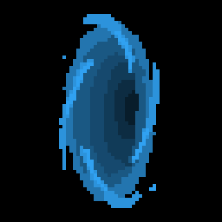

<!DOCTYPE html>
<html lang="en">
<head>
    <meta charset="UTF-8">
    <meta name="viewport" content="width=device-width, initial-scale=1.0">
    <title>variaveis</title>
</head>
<body>
    

    <script>
        //Declaração de variáveis
        // var é o tipo de variável super global
        var nome; // Declaração da variável vazia
        // const é o tipo de constante
        const registro = '000.202.333-1';
        //let variável de escopo local
        let idade;


       //Declaração múltiplas
       let sala, turma, aluno;
       var num1 = 3, num2 = 6, num3 = 9;

       //Atribuindo valor às variáveis
       nome = 'Alex'; // Utilizamos o sinal de igualdade depois do nome da variável
       console.log(nome);
       
       nome = 'Alexa'; // É possível reatribuir valores para variáveis
       console.log(nome); 
       
       //Acessando árvore do DOM e seus Method (métodos)
/*        window.document.write('<h1>');
       window.document.write('Salveee totozo');
       window.document.write('</h1>');

       document.write('Aqui tem uma constante: ' + registro + '<br>');
       //registro é uma constante onde não é possível alterar seu valor
         registro = 'mudado';  // Não é possível realizar essa mudança
       document.write('Mudamos a constante para: ' + registro + '<br>');
 */

       nome = prompt('Diga seu nome aee:');
       idade = prompt('E sua idade pae qual é?');

       //Convertendo string para number
       let idadeConvertida = parseInt(idade);
        
       document.write( '<h2>' + 'Salve ' + nome + '!' + '</h2>' );
       document.write ( '<p>' );
        document.write ( nome + ', você tem: ' + idade + ' anos' + '<br>' );
        //Inserindo imagem
        document.write('<br>')
        document.write ( '' );
        document.write('<br>' + 'Clique na imagem acima e descubra seu destino!');
        
        // Calculando o tempo de vida
        let morte = idadeConvertida - ((num2 * idadeConvertida)/num3) + num1;
        console.log(morte);

       document.write ( '</p>' );

       // Detectando clique na imagem
       let imgClick = document.querySelector('.hole');
       imgClick.addEventListener('click', function futuro(){
                //alert('Tudo certo tiow');

                // Exibindo o tempo de vida
                const anoAtual = 2023;
                document.write('<br>' + '<br>' + '<br>');
                document.write('<p>' + nome + ', apesar do seus ' + 
                                idade + ' anos de vida' + '<br>');
                document.write('Ainda restam para você: ' + morte +
                                ' anos de vida' + '<br>');
                document.write('Sendo assim você bate as botas no ano de: '
                                + (morte + anoAtual));
       });
     

    </script>
</body>
</html>